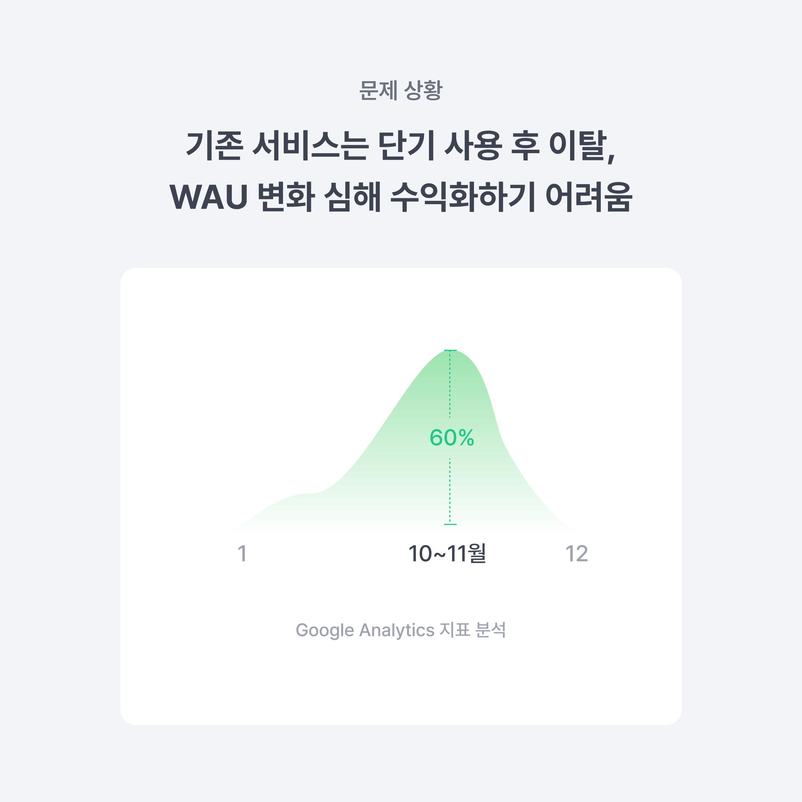
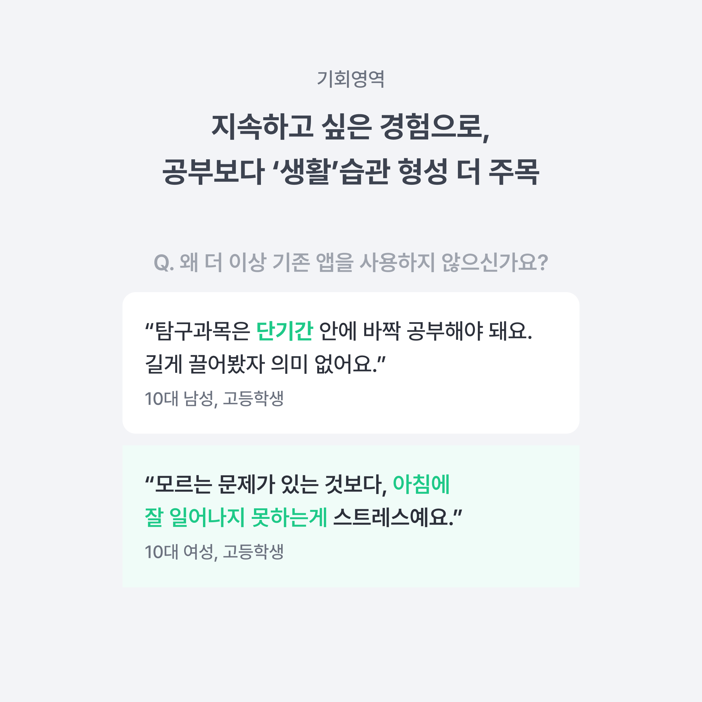

지속 참여가 결제로 이어지는 신규 서비스로 결제 유저 비율 50%를 목표로 했습니다
기존 서비스는 Google Analytics 분석 결과 특정 시기에 사용이 몰렸다가 이탈해 WAU 변화가 컸습니다. 인터뷰에서도 "탐구과목은 단기간에 바짝 공부해야 해서 길게 끌어봤자 의미 없다"는 반응이 나왔습니다.
반면 공부보다 지속하고 싶은 생활습관 형성 니즈가 있었고, 이는 지속적인 참여와 결제로 이어질 수 있는 기회라고 보았습니다.


프로젝트 목표
지속 참여 유저 확보(input)로 결제 유저 비율 50%(output)를 달성한다